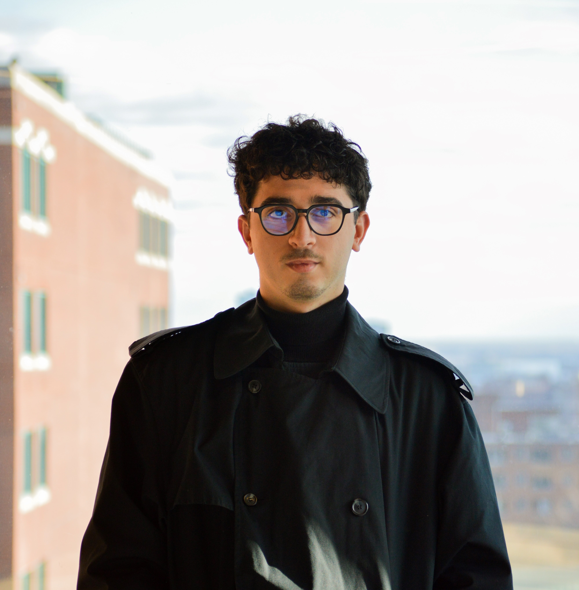

Zakaria El Yassini
MSc candidate at Concordia University, working on applied probability for machine learning.
I'm a mathematician who loves randomness. I'm curious how much of the world is chance and how much is pattern, and I like putting machine learning to work in that angle. Finance and biology are the places I most want to explore.

Graduate record
MSc GPA 4.15 / 4.3
Thesis defence
January 2027
Professional
Passed Level I of the CFA Program
About
Why mathematics.
It began in a coin shop. I collected coins for the engraving and the stories behind them. But one day, a certain 1967 one dollar piece came to my hands from a small shop near home. How that coin reached me was intriguing to me. Many people had browsed those same shelves before I did, and yet it came across my hands of all people. I had no vocabulary for this then. I can see now that the shop was a small random system: a fixed stock, customers arriving in an order nobody controls, and each purchase quietly deciding what the next person could find. Something which feels like destiny can be modeled in probability.
What keeps me here is randomness itself. It is as much a philosophical subject to me as a mathematical one. Is chance a property of the world, or only a measure of how little of the world we can see? Laplace would have said the second, and quantum mechanics keeps the first on the table. I do not need to settle it for the question to be useful, and I enjoy arguing either side. Mathematics is where the argument becomes sharp, because it lets me state exactly what I would be claiming if randomness were real, and exactly what I would be claiming if it were not. What I love most is the moment when a messy, noisy phenomenon turns out to have a framework, a small set of objects in which it becomes simple. That kind of elegance is what I look for in my own work.
Research
Learning backward flows in continuous-depth networks.
My MSc thesis asks how classical results on flows can be put to work in Neural ODEs and Neural SDEs, by approximating the backward map of the flow with a neural network.
Part I
Neural ODEs
The adjoint method reconstructs forward states by integrating backward in time. I replace that reconstruction with a neural network that approximates the backward flow, trained so that a round trip along the flow returns to where it began.
Part II
Neural SDEs
Here the backward map is the main object of study, building on recent work on learning pathwise forward solution maps of SDEs (McCallum, Blasingame et al.). Inverting a contractive stochastic flow amplifies errors, so stability under repeated composition is the central question.
Interests
More broadly
Stochastic analysis (stochastic flows, rough paths), continuous-depth deep learning, and probabilistic machine learning, with applications to mathematical finance.
Selected work
Quantitative projects, with the code.
Strong forward flow maps for the CIR process
A neural network learns the pathwise forward solution map of the Cox–Ingersoll–Ross process from simulated paths, testing whether Strong Stochastic Flow Maps (McCallum, Blasingame et al.) extend from additive to multiplicative noise. A Lamperti transform and an exponential parameterisation keep the map positive by construction, and the drift and diffusion coefficients can be read back from the learned map alone.
Capital-protected structured notes under Heston and Vasicek
Design and valuation of two notes, one with coupons that rise with the realised volatility of an equity ETF and one with coupons that fall as the short rate rises. Models are calibrated to market data and valued under the risk-neutral measure, then risk is assessed by Monte Carlo under the physical measure with VaR and expected shortfall at 95%.
Yield curve modeling and forecasting with machine learning
PCA on 17 years of US Treasury yields reduces nine maturities to three components that explain 99% of the variance, matching level, slope and curvature. Linear models lead at short horizons, while LSTMs improve long-horizon accuracy.
Monte Carlo and PDE option pricing
European vanilla, basket and Asian options priced by Monte Carlo with control variates, for a 307,729× efficiency improvement, alongside finite-difference pricing with the FTCS scheme.
Stock portfolio optimisation from live market data
A tool that pulls historical stock data, analyses risk and return, and searches by random sampling for the best-performing portfolios of 17 stocks drawn from a universe of 32.
Kou model calibration via Bayesian data analytics
Bayesian parameter calibration of the Kou jump-diffusion model, applied to SONY.
Experience
Teaching, research and industry.
Jan 2025 to now
Teaching Assistant
Concordia University
Lead tutorial labs for 30+ students on hypothesis testing, matrix analysis and optimization, and grade coursework in Neural Networks and Probability.
Oct 2025 to now
Investment Transparency Committee Member
Concordia University Inter-Generational Fund
Work with the Treasurer, the Chief Investment Officer and the Board on portfolio performance, ESG integration and responsible investment policy.
May to Dec 2024
Financial Performance Analyst Intern
IPEX Inc
Built Power BI dashboards tracking 30+ CAPEX initiatives, and a Python tool that automated PVM analysis and saved more than 20 hours of manual work each month.
Jan to May 2023
Analyst Intern
Bombardier Inc
Developed reporting tools for 50+ CAPEX initiatives, and automated data collection with Power Apps and Power Automate, which accelerated analysis by five days.
Education
Training, recognition and tools.
Degrees
MSc, Mathematics
Concordia University, Jan 2025 to now
GPA 4.15 / 4.3.
BSc, Mathematical and Computational Finance
Concordia University, 2020 to 2024
With Distinction.
Awards
FAS Graduate Master's Award, Concordia University, 2025
Bronze Honour, International Youth Math Challenge, 2023
Credentials
Diploma in Operational Research, Canadian Operational Research Society, 2025
Machine Learning for Trading, New York Institute of Finance, 2024
Passed Level I of the CFA Program
Tools
Coding: Python, C++, MATLAB and R
Libraries (Python): TensorFlow, Keras, NumPy, SciPy and pandas
Office" Power BI and Excel
Languages
English, French and Arabic.